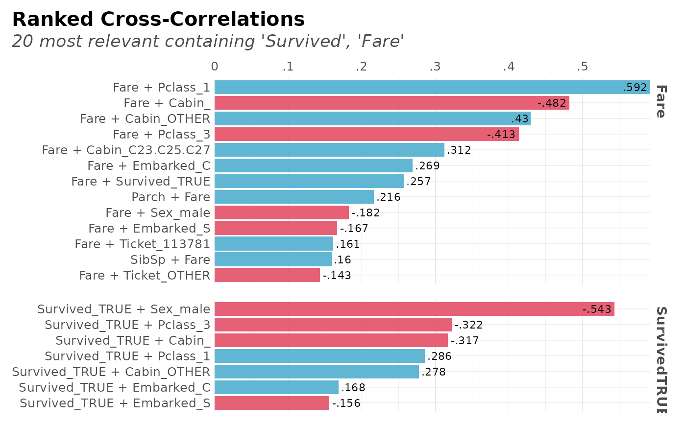

This function creates a correlation full study and returns a rank of the highest correlation variables obtained in a cross-table.
corr_cross( df, plot = TRUE, pvalue = TRUE, max_pvalue = 1, type = 1, max = 1, top = 25, local = 1, ignore = NA, contains = NA, grid = FALSE, rm.na = FALSE, quiet = FALSE, ... )
Arguments
| df | Dataframe. It doesn't matter if it's got non-numerical columns: they will be filtered! |
|---|---|
| plot | Boolean. Show and return a plot? |
| pvalue | Boolean. Returns a list, with correlations and statistical significance (p-value) for each value |
| max_pvalue | Numeric. Filter non-significant variables. Range (0, 1] |
| type | Integer. Plot type. 1 is for overall rank. 2 is for local rank. |
| max | Numeric. Maximum correlation permitted (from 0 to 1) |
| top | Integer. Return top n results only. Only valid when type = 1. Set value to NA to use all cross-correlations |
| local | Integer. Label top n local correlations. Only valid when type = 2 |
| ignore | Vector or character. Which column should be ignored? |
| contains | Character vector. Filter cross-correlations with variables that contains certain strings (using any value if vector used). |
| grid | Boolean. Separate into grids? |
| rm.na | Boolean. Remove NAs? |
| quiet | Boolean. Keep quiet? If not, show messages |
| ... | Additional parameters passed to |
Details
DataScience+ Post: Find Insights with Ranked Cross-Correlations
See also
Other Correlations:
corr_var(),
corr()
Other Exploratory:
corr_var(),
crosstab(),
df_str(),
distr(),
freqs_df(),
freqs_list(),
freqs_plot(),
freqs(),
lasso_vars(),
missingness(),
plot_cats(),
plot_df(),
plot_nums(),
tree_var(),
trendsRelated()
Examples
Sys.unsetenv("LARES_FONT") # Temporal data(dft) # Titanic dataset # Only data with no plot corr_cross(dft, plot = FALSE, top = 10)#> Warning: There are NA values in your data!#> Warning: the standard deviation is zero#>#> # A tibble: 10 x 8 #> # Rowwise: #> key mix corr pvalue group1 cat1 group2 cat2 #> <chr> <chr> <dbl> <dbl> <chr> <chr> <chr> <chr> #> 1 Ticket_113781 Cabin_C22.C26 0.866 3.35e-269 Ticket 1137… Cabin "C22.C26" #> 2 Pclass_1 Cabin_ -0.789 4.39e-190 Pclass 1 Cabin "" #> 3 SibSp Ticket_CA..23… 0.604 1.40e- 89 SibSp SibSp Ticket "CA..234… #> 4 Fare Pclass_1 0.592 2.87e- 85 Fare Fare Pclass "1" #> 5 SibSp Ticket_OTHER -0.571 3.37e- 78 SibSp SibSp Ticket "OTHER" #> 6 Survived_TRUE Sex_male -0.543 1.41e- 69 Survived TRUE Sex "male" #> 7 Fare Cabin_ -0.482 4.85e- 53 Fare Fare Cabin "" #> 8 Parch Ticket_OTHER -0.440 1.94e- 43 Parch Parch Ticket "OTHER" #> 9 SibSp Parch 0.415 2.24e- 38 SibSp SibSp Parch "Parch" #> 10 Age Pclass_1 0.349 7.16e- 22 Age Age Pclass "1"# Show only most relevant results filtered by pvalue corr_cross(dft, rm.na = TRUE, max_pvalue = 0.05, top = 15)#> Warning: the standard deviation is zero#>#> Warning: There are NA values in your data!#> Warning: the standard deviation is zero#># Cross-Correlation max values per category corr_cross(dft, type = 2, top = NA)#> Warning: There are NA values in your data!#> Warning: the standard deviation is zero